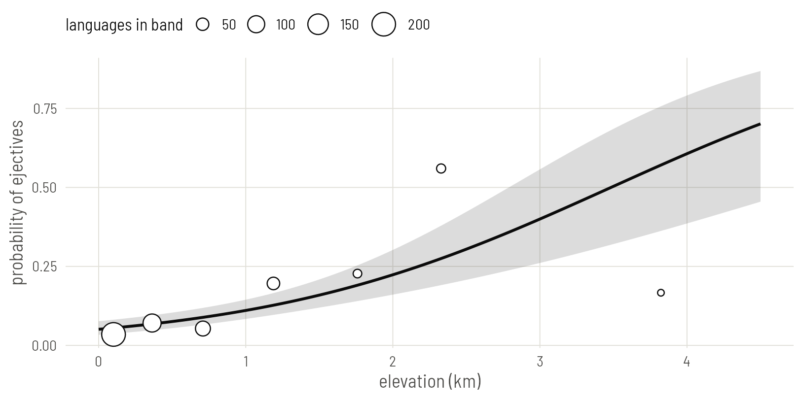
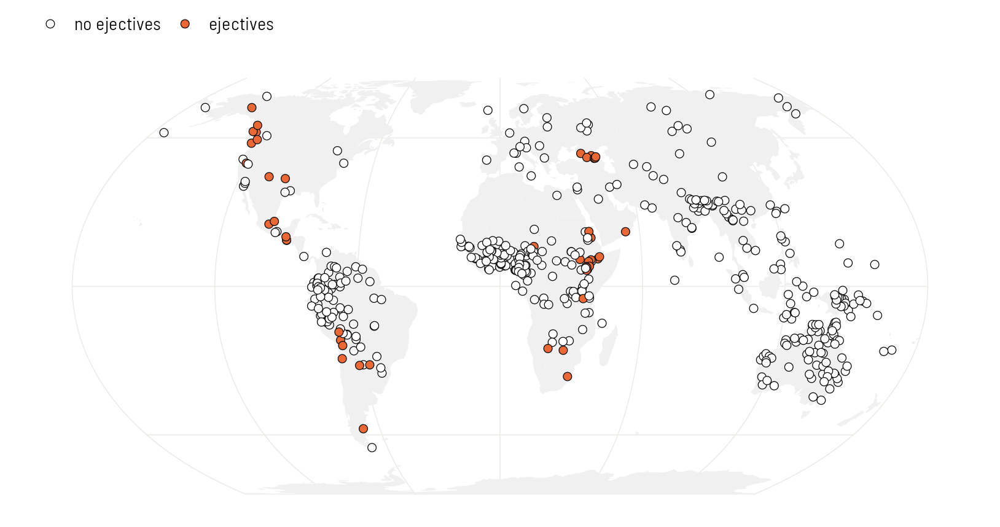
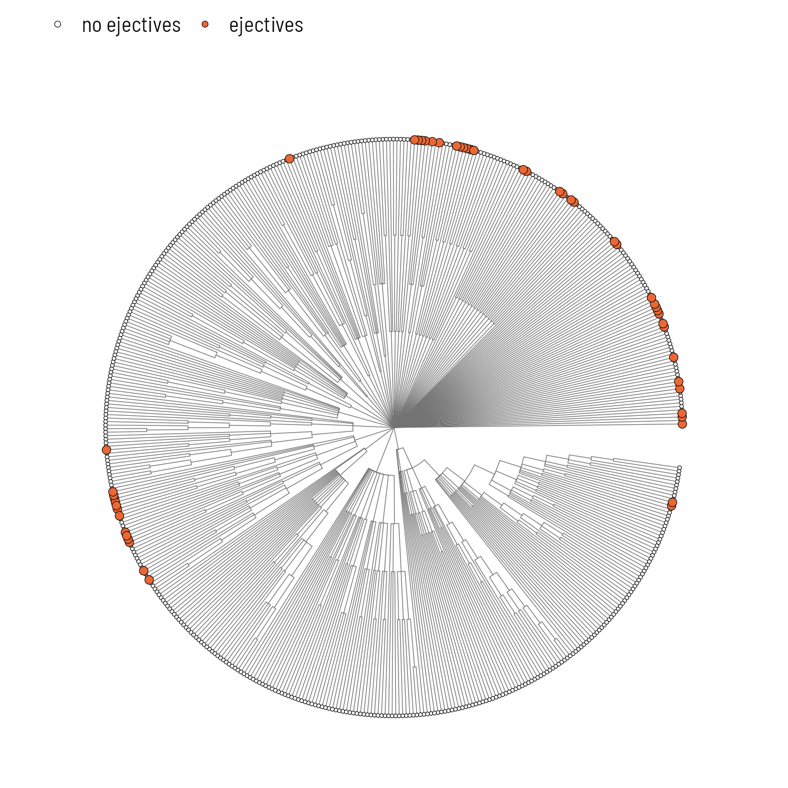
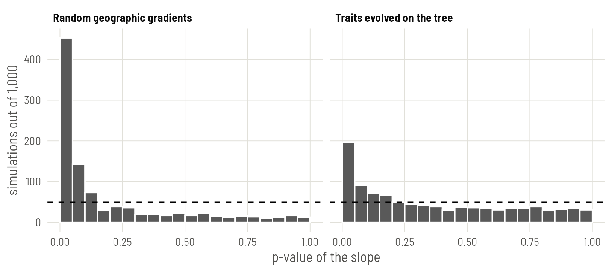

The data and the first model
Load the packages for this plate and read the two files every plate uses: one row per language, and a tree of the same languages.
library(ape)
library(phytools)
library(spdep)
library(sf)
library(rnaturalearth)
library(ggplot2)
base <- "https://rehan-muh.github.io/tutorials/data/"
d <- read.csv(paste0(base, "languages.csv"))
tree <- read.tree(paste0(base, "glottolog_tree.nwk"))
d$elev_km <- d$elevation / 1000
d[c(1, 120, 250, 380, 500), c("name", "family", "elevation", "ejectives")] name family elevation ejectives
1 West Circassian Abkhaz-Adyge 235 1
120 Ginyanga Atlantic-Congo 299 0
250 Anindilyakwa Gunwinyguan 75 0
380 Djangun Pama-Nyungan 365 0
500 Ayoreo Zamucoan 233 0The question is Everett’s: are languages spoken at altitude more likely to have ejectives? The obvious model is a logistic regression of ejectives on elevation in kilometres.
m0 <- glm(ejectives ~ elev_km, family = binomial, data = d)
round(summary(m0)$coefficients, 3) Estimate Std. Error z value Pr(>|z|)
(Intercept) -2.924 0.222 -13.19 0
elev_km 0.839 0.147 5.72 0Each kilometre of altitude multiplies the odds of having ejectives by about 2.3, and the slope sits 5.7 standard errors from zero. Taken at face value this is overwhelming evidence.
Draw the fitted line over the data. predict() returns the line and its standard error on the logit scale; plogis() turns both into probabilities. The circles are the observed share of languages with ejectives in seven bands of elevation.
grid <- data.frame(elev_km = seq(0, 4.5, by = 0.05))
pr <- predict(m0, newdata = grid, se.fit = TRUE)
grid$p <- plogis(pr$fit)
grid$lo <- plogis(pr$fit - 1.96 * pr$se.fit)
grid$hi <- plogis(pr$fit + 1.96 * pr$se.fit)
breaks <- c(0, 0.25, 0.5, 1, 1.5, 2, 3, 5)
d$band <- cut(d$elev_km, breaks, include.lowest = TRUE)
obs <- aggregate(cbind(ejectives, elev_km) ~ band, data = d, FUN = mean)
obs$n <- as.vector(table(d$band))
ggplot(grid, aes(elev_km, p)) +
geom_ribbon(aes(ymin = lo, ymax = hi), alpha = 0.2) +
geom_line(linewidth = 0.9) +
geom_point(data = obs, aes(y = ejectives, size = n),
shape = 21, fill = "white") +
scale_size_area(max_size = 7, name = "languages in band") +
labs(x = "elevation (km)", y = "probability of ejectives")
That standard error rests on one assumption: that the 500 languages are 500 independent observations. The rest of this plate checks it.
Where the ejectives are
Put the languages on a map. sf turns the coordinates into points, rnaturalearth supplies the land, and coord_sf() draws both in the Equal Earth projection.
world <- ne_countries(scale = "small", returnclass = "sf")
pts <- st_as_sf(d, coords = c("lon", "lat"), crs = 4326)
ggplot() +
geom_sf(data = world, fill = "grey94", colour = NA) +
geom_sf(data = pts, aes(fill = factor(ejectives)),
shape = 21, size = 1.9, stroke = 0.3) +
scale_fill_manual(values = c("0" = "white", "1" = "#EB6834"),
labels = c("no ejectives", "ejectives"), name = NULL) +
coord_sf(crs = "+proj=eqearth")
The 50 languages with ejectives are not spread evenly over the high ground of the world. They sit in a few regions. Count the families they belong to:
ej <- subset(d, ejectives == 1)
head(sort(table(ej$family), decreasing = TRUE), 8)
Afro-Asiatic Mayan Nakh-Daghestanian South Omotic
13 3 3 3
Atlantic-Congo Kiowa-Tanoan Salishan Ta-Ne-Omotic
2 2 2 2 length(unique(ej$family))[1] 27One family, Afro-Asiatic, supplies 13 of the 50. The rest come from 26 other families, yet on the map they still sit side by side: several unrelated families in the Caucasus, several in the Pacific Northwest, several in the Andes. Clustering inside a family points to inheritance. Clustering across families points to contact. This sample has both.
Now the tree. ggtree draws it as a fan, one wedge per family, and %<+% attaches the data so the tips can be coloured.
library(ggtree)
ggtree(tree, layout = "fan", open.angle = 8,
linewidth = 0.2, colour = "grey45") %<+% d +
geom_tippoint(aes(fill = factor(ejectives), size = factor(ejectives)),
shape = 21, stroke = 0.25) +
scale_fill_manual(values = c("0" = "white", "1" = "#EB6834"),
labels = c("no ejectives", "ejectives"), name = NULL) +
scale_size_manual(values = c("0" = 0.9, "1" = 2.2), guide = "none")
Both pictures say the same thing. If you know that one language has ejectives, you can guess that its sisters and its neighbours do too. Those languages are partly repeating each other, and a model that counts each as fresh evidence is counting too much.
How often does a meaningless predictor pass?
A direct way to see the damage: invent predictors that cannot have anything to do with ejectives, and count how often the regression calls them significant. If the model is honest, that happens 5% of the time.
First, 1,000 made-up traits that evolve along the tree by Brownian motion. Each is inherited with random changes and nothing else. fastBM() simulates them all at once.
set.seed(1)
fake_phy <- fastBM(tree, nsim = 1000)[d$glottocode, ]
p_value <- function(x) {
summary(glm(d$ejectives ~ x, family = binomial))$coefficients[2, 4]
}
p_phy <- apply(fake_phy, 2, p_value)
mean(p_phy < 0.05)[1] 0.196Second, 1,000 made-up geographic gradients. Pick a random direction through the globe and score each language by how far along it the language lies. Latitude is one such gradient; these are 1,000 others.
rad <- pi / 180
xyz <- cbind(cos(d$lat * rad) * cos(d$lon * rad),
cos(d$lat * rad) * sin(d$lon * rad),
sin(d$lat * rad))
fake_sp <- xyz %*% t(matrix(rnorm(3000), ncol = 3))
p_sp <- apply(fake_sp, 2, p_value)
mean(p_sp < 0.05)[1] 0.453sims <- data.frame(
p = c(p_phy, p_sp),
kind = rep(c("Traits evolved on the tree", "Random geographic gradients"),
each = 1000))
ggplot(sims, aes(p)) +
geom_histogram(breaks = seq(0, 1, 0.05), fill = "grey35", colour = "white") +
geom_hline(yintercept = 50, linetype = "dashed") +
facet_wrap(~kind) +
labs(x = "p-value of the slope", y = "simulations out of 1,000")
A trait that only follows the tree passes the 5% test 20% of the time, close to four times too often. A random gradient across the map passes 45% of the time, close to a coin flip. Elevation is exactly this kind of variable: it is shared by neighbours, and relatives tend to live near each other. So a small p-value for elevation tells us very little until the dependence between languages is in the model.
These simulations hold the real ejective data fixed and randomise the predictor. That is the right comparison for one question only: could a predictor with this much spatial or genealogical structure pass by accident? It can, easily.
Measuring spatial dependence: Moran’s I
The simulations show the problem exists. Two standard statistics measure how much of it is left in a model’s residuals.
Moran’s I is a correlation between each language’s value and the average of its neighbours. It needs a definition of “neighbour”. Here each language is linked to its five nearest, by great-circle distance, and links are made mutual.
coords <- as.matrix(d[, c("lon", "lat")])
nb <- knn2nb(knearneigh(coords, k = 5, longlat = TRUE))
nb <- make.sym.nb(nb)
lw <- nb2listw(nb, style = "W")
moran.mc(residuals(m0, type = "pearson"), lw, nsim = 999)
Monte-Carlo simulation of Moran I
data: residuals(m0, type = "pearson")
weights: lw
number of simulations + 1: 1000
statistic = 0.4, observed rank = 1000, p-value = 0.001
alternative hypothesis: greaterUnder independence I is close to zero. The residuals of the elevation model have I = 0.44, larger than every one of 999 random reshufflings of the residuals over the map. What the model failed to explain about one language, it failed to explain about its neighbours in the same direction.
Measuring phylogenetic signal
The genealogical counterpart asks how much of a variable’s variation follows the tree. Pagel’s λ runs from 0 (relatives are no more alike than strangers) to 1 (as alike as Brownian motion along the tree predicts). phylosig() estimates it for a named vector of values.
res <- setNames(residuals(m0, type = "pearson"), d$glottocode)
phylosig(tree, res, method = "lambda", test = TRUE)
Phylogenetic signal lambda : 1.08325
logL(lambda) : -605.72
LR(lambda=0) : 160.594
P-value (based on LR test) : 8.39177e-37 The estimate is at its ceiling. (The ceiling depends on the shape of the tree and can sit a little above 1, as it does here.) Relatives are at least as alike in their residuals as the tree predicts, and the test against λ = 0 leaves no doubt. The same call works for any continuous variable. Consonant inventory size, on the log scale, is a useful second example because it will come back on Plate 8:
log_cons <- setNames(log(d$n_consonants), d$glottocode)
phylosig(tree, log_cons, method = "lambda", test = TRUE)
Phylogenetic signal lambda : 1.08325
logL(lambda) : -100.842
LR(lambda=0) : 219.301
P-value (based on LR test) : 1.28492e-49 λ and Moran’s I are built for continuous values. Applied to the residuals of a logistic regression they are a serviceable alarm, not a measurement. For a binary feature the dependence is better estimated inside the model itself, which is what the next plates do.
You need three things: a data frame with one row per language, a phylo object whose tip labels match a column of that data frame, and coordinates. Check the match before anything else with setdiff(tree$tip.label, d$glottocode); it should return nothing in either direction.
What to carry forward
- The naive slope is 0.84 per kilometre with a standard error of 0.15. Keep these two numbers in mind; every later plate re-estimates them.
- Ejectives cluster in families and in regions, and the residuals of the naive model inherit both kinds of clustering.
- With data like these, predictors that mean nothing pass a 5% test 20% to 45% of the time.
There are two ways forward and they are not rivals. One models who is related to whom (Plate 2). The other models who lives near whom (Plates 3 and 4). Plate 5 puts them in one model.